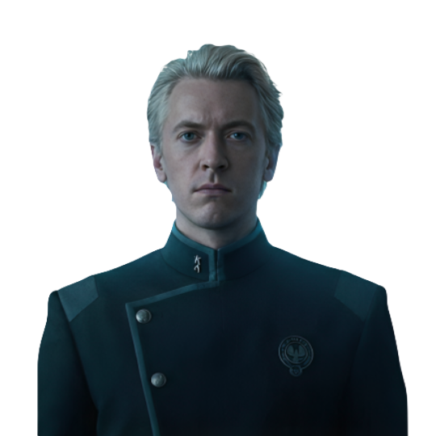

In a world of scarcity, wanting more is survival.
It circles, feeds, and justifies ambition.

Emotion versus control. Two paths shaped by one question: What matters most when everything is at stake?
Individuality dissolves. Structures demand control.
Snow doesn’t rise. It lands. Quietly. Softly. And always on top.
Power rarely arrives all at once. It grows quietly, fed by hunger and fear. Coriolanus Snow did not wake up cruel—he learned cruelty through a series of small, justified choices.
Fear bends decisions. It whispers that safety is worth more than kindness, more than love. Each choice Snow makes moves him further from Lucy Gray and closer to the Capitol he will one day rule.
In the end, what shapes us is not just what we want, but what we are willing to become to get it. Snow's tragedy is not that he chose power, but that he convinced himself he had no other choice.